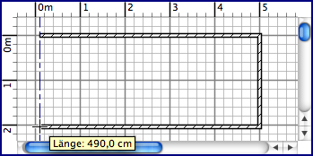

| Wände einzeichnen | |||
Um Wände zu zeichnen, müssen Sie zunächst Plan > Wand erstellen oder das Wand erstellen -Tool benutzen.
Klicken Sie im Plan an den Start-Punkt an dem die neue Wand entstehen soll. Dann klicken oder doppelklicken Sie an die Stelle im Plan, wo sie enden soll. So lange Sie nicht doppel-klicken oder den Escape-Knopf drücken, beendet jeder weitere Klick die eben gezeichnete Wand und beginnt eine Neue am Ende der alten. Während Sie eine Reihe Wände einzeichnen, wird der Startpunkt der neuen Wand an eine bestehende angehängt, wenn Sie auf den Start- oder Endpunkt der bestehenden Wand klicken. Die letzte Wand wird an eine bestehende angehängt, indem Sie an deren Start- oder Endpunkt doppelt klicken. Die Klick-Punkte sind die Mitte der Wand bezogen auf ihre Dicke. Wände werden simultan in der 3D-Ansicht und im Plan gezeichnet.  Um das Einzeichnen von Wänden zu beenden, klicken Sie in Plan > Auswählen oder wählen das Auswählen -Tool.
|
|